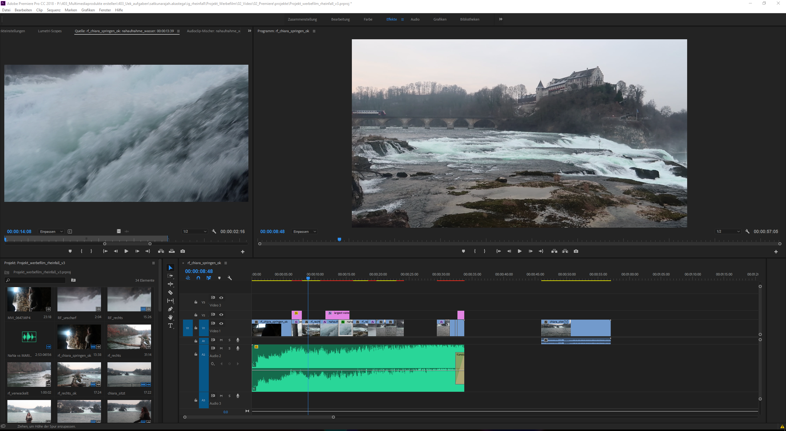
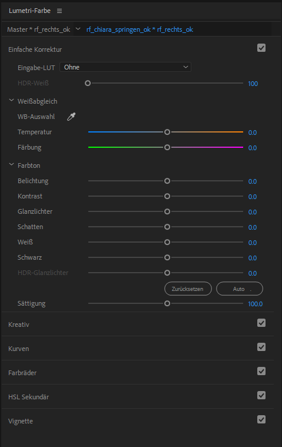

Post Produktion
Work Flow
- Daten von Karte kopieren und Back-Up
- Ordner Struktur
- Sichten und benennen
- Premier pro: Projekt Import
- Rohschrift
- Feinschnitt
- Color Gradin und Animation
- Laufend: Versionierung und Backup
Film schnitt
Die wichtigsten Techniken beim Schneiden:
| Schnitt Technik | Beschreibung |
|---|---|
| Schnitt (Montage): | Der Schnitt bezieht sich auf die Zerschneidung und Neuzusammensetzung des Filmmaterials; kann je nach Montagetechnik synthetisierend wirken oder Diskontinuitäten erzeugen. |
| Harter Schnitt (direct, straight cut): | Wenn ein direkter Übergang zur nächsten Einstellung folgt, dann nennt man es harten Schnitt. Dies ist von Profis am meisten benutzte Schnitttechnik. Der harte Schnitt erzeugt potentiell immer Verwirrung und muss durch Kommentar, Handlungslogik, Ton usw. unterstützt werden. Der harte Schnitt muss im Standard-Hollywoodstil immer außerhalb eines 30°-Winkels relativ zur letzten Kameraposition erfolgen und soll in der Regel mindestens eine Einstellungsgröße überspringen (z.B. groß zu halbnahe, aber nicht groß zu nahe). |
| Unsichtbarer Schnitt (matching action, continuity cutting): | Die Schnitte erfolgen so, dass sie mit der abgebildeten Handlung logisch übereinstimmen und möglichst wenig auffallen (beim Raum-, BlickWortwechsel usw.). „Sichtbare“ oder „fühlbare“ Schnitte lenken die Aufmerksamkeit auf das Medium selbst. |
| Überblendung (cross-fade, dissolve): | Filmsegmente werden übereinandergelegt, um einen Übergang zu schaffen oder einen Bezug herzustellen, kann unter anderem kurz oder weich erfolgen. Im Gegensatz zum harten Schnitt wird bei der Überblendung ein eindeutiger Bezug zwischen den zwei sich überlappenden Einstellungen hergestellt. Der Zuschauer hat gelernt, harte Schnitte zu „lesen“ und muss nicht ständig durch Überblendungen „ausgeholfen“ werden. |
| Übersichtseinstellung (establishing shot): | Diese Technik sorgt in der Standardfilmgrammatik für einen Handlungsrahmen (Beispiel: Gebäude wird von außen gezeigt; dann wird zu einem Innenraum geschnitten, in dem sich die tatsächliche Handlung stattfindet.) Der establishing shot ist ein wichtiger Bestandteil der klassischen Filmgrammatik. Die aktuelle Filmgrammatik benutzt häufig eine Detailaufnahme, schneidet dann zu größeren Einstellungen, die diese im Kontext zeigen. |
| Weicher Schnitt (soft cut): | Sie ist eine kurze Überblendung (schwarze oder weiße Stelle) beziehungsweise Ab- und –Aufblendung, die zwischen Schnitten erfolgt. Sie signalisiert unter anderem Unterbrechungen während gefilmter Gespräche. |
| Seltene Schnitttechniken: | Blende (fade, wipe): Das ist ein Übergang, wobei es aussieht, als ob die Kamerablende schliesst. Diese Technik wurde häufig im Stummfilm verwendet, heute wird es nur noch selten gebraucht. |
| Match cut: | Das ist ein Schnitt zwischen zwei Bildern mit dem gleichen Ausschnitt oder der gleicheren Größe (unterstreicht Veränderung in der Zeit). Sie kommt vergleichsweise selten vor und erzeugt in der Regel eine symbolische Gleichsetzung der zwei gegenübergestellten Einstellungen. |
| Jump cut (Bildsprung): | Wenn sich die Kameraposition sich innerhalb eines 30°Winkels relativ zur letzten Kameraposition ändert, wird von Zuschauern unwillkürlich als „Fehler“ oder „Sprung“ empfunden. Ähnliches gilt auch für die Einstellungsgröße, wird beim selben Gegenstand von einer Einstellungsgröße unmittelbar zur nächsten geschnitten (zum Beispiel: von Halbnahe zu Amerikanisch), wird dies vom Zuschauer als Sprung empfunden. Im klassischen Hollywood Filmen ist es verboten. |
Digitale Tricks wie Blättern, Wellen, Spiralen, pixellierte Auflösung usw. müssen sehr gezielt bzw. selten eingesetzt werden.
Film schnitt Regeln
- Material ordnen und benennen
- Einfacher schnitt reicht aus
- Gutes Material generieren
- Neue Regeln aufsetzen
- Pause -> frischer blick
- Feedback einholen
Adobe-Premiere Pro
Adobe Premiere Pro ist eine Videoschnittsoftware von der Firma Adobe. Sie ist einer der meist verbreitesten Videoschnittprogramm der Welt. Sie bietet unzählige Videobearbeitungstools an. Auf diesem Bild sehen sie die Benutzer Oberfläche von Adobe Premiere Pro.  Klick auf dem Link, um ein Video über die Bedienfelder und Tools von Premiere Pro, die man in dem Videoschnitt-Workflow einsetzen kann. Hier ist der Link zum Video
Ausserdem kann man mit dem Media Encoder das Video in allen Videodatei Formaten exportieren.
Lumetri Farben
Gerade die Welt der Farben macht bei professionellen Filmen und Clips einiges aus. Um das Projekt farblich korrekt abzustimmen, sollte man den Weissabgleich machen. Hierbei wird unter Lumetri-Farben in der Kategorie Weissabgleich, die Pipette verwendet. Mir der klickt man in den hellsten Punkt des Bildes und der Weissabgleich wird automatisch gemacht.
Ton
Der Ton ist fast ebenso wichtig wie das Bild. Film ohne Ton wirkt tot oder unwirklich. Auch „Stummfilme“ wurden begleitet von Musik und Special Effects.
Der Ton im Film weist fünf Schichten auf:
| Tonschicht | Beschreibung |
|---|---|
| Atmo: | Atmosphäre-Aufnahme, Aufzeichnung von Geräuschen in der Drehumgebung, die als Hintergrundeingesetzt werden. Atmos müssen in der Regel nicht genau mit Bildinhalten synchronisiert werden. |
| Effekte: | Das sind künstliche erzeugte Geräusche, die gezielt eingesetzt werden. |
| Geräusche: | In einem Film sind es bedeutungslose Töne. |
| Sprache: | Sprache sind wiederum bedeutungstragende Töne. |
| Musik: | Die Musik wird als harmonische Töne empfunden. |
Wenn der Ton lokalisierbar im Bildraum ist, nennt man es synchron. Wenn es aber außerhalb des Bildraums („kommt aus dem Off“), lässt es sich aber in den Kontext einordnen. Übergänge zwischen synchron und asynchron kommen häufig vor. Man hört zuerst ein Geräusch, sieht dann die Ursache. Musik erzeugt die verschiedensten Arten von Emotionalisierung und Rhythmisierung und übt eine starke Wirkung auf das Publikum aus.
Tonübergänge beim Schnitt
Beim Schneiden kann der Ton eingesetzt werden, um bestimmte Übergänge zu schaffen oder Effekte zu erzielen. So kann ein gleitender Tonübergang (z.B. Musik) zwei stark kontrastierende Einstellungen miteinander verbinden. Ton aus dem Off kann räumliche Tiefe beeinflussen, durch einen nachträglichen Schnitt zu einer Tonquelle aus dem Off kann Spannung erzeugt und abgebaut werden. Effektvolle Übergänge können auch durch die langsame Ausblendung von Ton oder durch die Mischung verschiedener Töne geschaffen werden.Licht
Beleuchtung
| Beleuchtungs Art | Beschreibung |
|---|---|
| Führungslicht (key light): | Führungslicht liefert den Hauptanteil an Lichtenergie für die Belichtung des Materials. Sie zeichnet das Volumen des Objekts, dient der Darstellung der Form sowie dem Erkennen der Oberfläche. Standardposition des Führungslichts bei Menschen ist 40° Grad in der Höhe (ähnlich dem Sonnenlicht) und 40° Grad seitlich von der Kameraachse. |
| Aufhellung (fill light): | Das Minimum an Licht, das den Schatten durchzeichnet beziehungsweise die Fläche „unter dem Schatten“ sichtbar macht. Sie soll selbst keinen neuen Schatten erzeugen. Die Aufhellung ergänzt und unterstützt das natürliche Streulicht, das einem im Raum immer umgibt. |
| Modellierungslicht: | Bei der Spotbeleuchtung eines Teils der Person, wird dieses Licht verwendet, um diesen genauer zu zeichnen. |
| Gegenlicht: | Sie hebt die Konturen der betrachtenden Person vom Hintergrund ab. Kommt aus der Tiefe und ist gegen die Kamera gerichtet. |
| Hintergrundlicht: | Das ist eine Spotbeleuchtung eines flachen, monochromen Hintergrundes, damit die gefilmte Person nicht in der Luft zu hängen scheint. |
Beleuchtungsstile
| Beleuchtungsstiel | Beschreibung |
|---|---|
| Normalstil (Der Normalfall): | Die Szene wird so ausgeleuchtet, dass alle Details deutlich zu erkennen sind und der Eindruck einer «gleichmäßigen Ausleuchtung» entsteht. |
| Low-Key-Stil (auch: chiaroscuro style): | Sie zeichnet sich durch schroffe HellDunkel-Konfrontationen aus. Zu finden bei Darstellungen dramatischer Situationen, geheimnisvoller Vorgänge, Verbrechen, psychischer Anspannung und dergleichen. Die Phrase „low key“ bezieht sich auf das niedrige Verhältnis von Aufheller zum Führungslicht. |
| High-Key-Stil: | Sie bezeichnet eine hell ausgeleuchtete Räumlichkeit, in der alles genau und überdeutlich zu erkennen ist. High-Key-Ausleuchtung erzeugt eine freundliche, optimistische Grundstimmung (viele klassische Hollywood-Komödien sind in diesem Stil ausgeleuchtet). |
Adobe-After Effekts

Um professionelle Titel, Intros und Überblendungen in einem Video einzufügen, benutzt man Adobe After Effekt. Mit den sogenannten Keyframes kann man einfache Animationen erstellen und sie in Adobe Premiere Pro importieren.
Hier ist ein Link, der Zeigt wie man Animationen erstellt.Hier ein Link um einen ersten Einblick auf Adobe after Effekt zu bekommen.